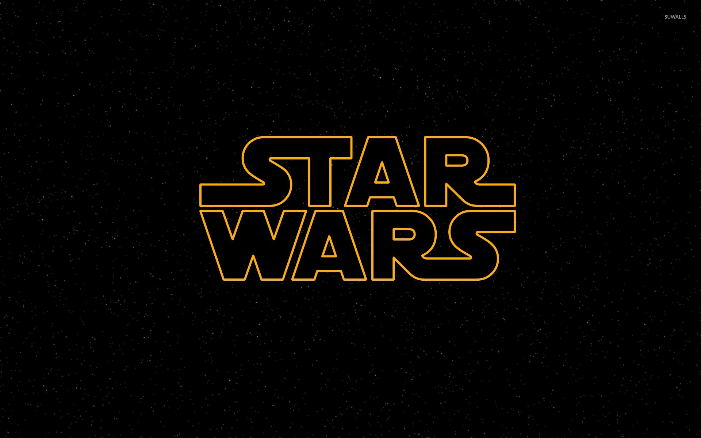
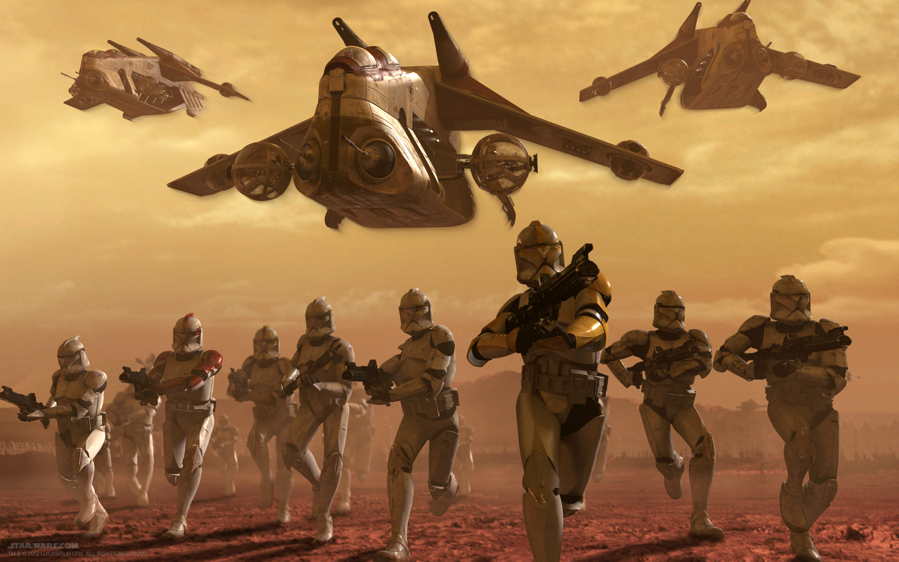
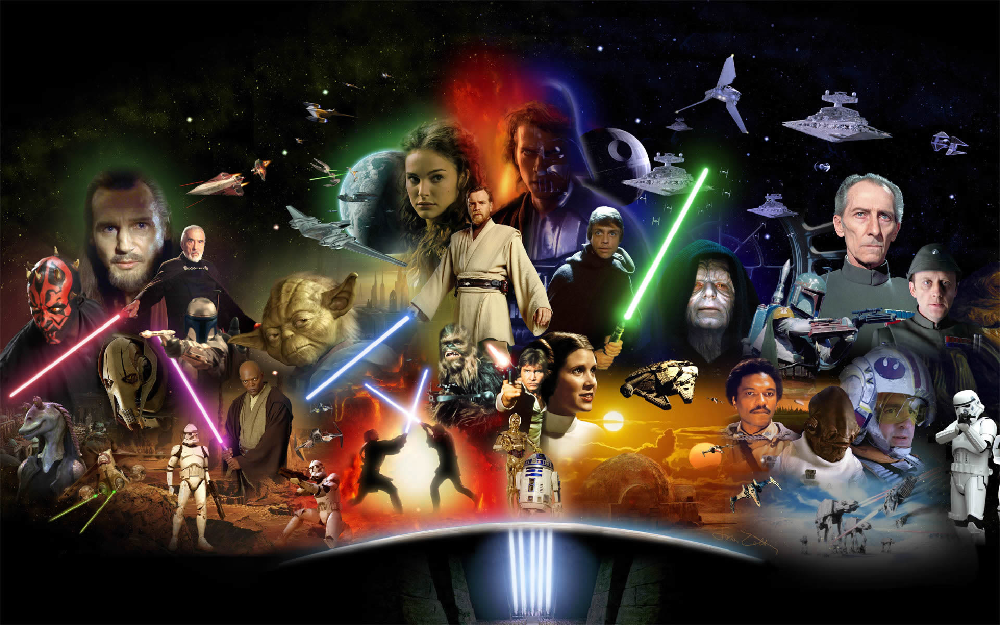
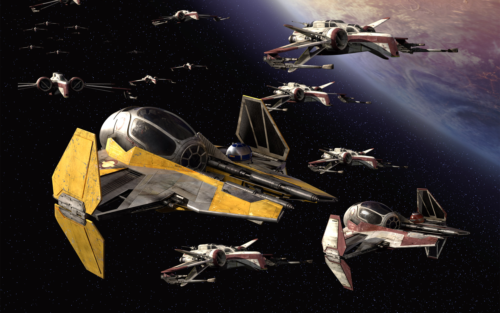

La Grande Armée de la République, également connue sous le nom d'armée de clones ou armée de la République, était la partie principale des forces armées de la République Galactique en ses années finales, qui est une des plus grandes armées jamais rassemblée. Après la Guerre des Clones, elle a servi de noyau aux forces armées de l'Empire Galactique.
Les soldats de cette armée sont des clones, environ deux cent mille au début de la Guerre des Clones, créés sur la planète aquatique Kamino. Les véhicules ont été construits sur Kuat. Après les premiers combats, un million d'unités ont rejoint les rangs de l'armée.
C'est le Maître Jedi Sifo-Dyas qui a commandé la création d'une telle armée auprès des cloneurs de Kamino, (bien que ce soit en réalité un complot des Seigneurs Sith visant à leur garantir une armée pour l'Empire Galactique) lors du blocus de Naboo en 32 av.BY. Après quoi, Sifo-Dyas fut tué par Dark Tyranus.
Les Kaminoens se mirent au travail. Le clonage s'est basé sur la personne de Jango Fett, chasseur de primes.
Leurs techniques ont permis de doubler la vitesse de croissance, pour que les clones arrivent à maturité à temps.
Un million de clones furent créés à Tipoca City. Plus tard, deux millions seront créés en cachette à Baran Wy et Su Des.
Pour secourir les Jedi dans l'Arène de Geonosis, venus eux même à la rescousse d'Anakin Skywalker, Obi-Wan Kenobi et Padmé Amidala, Maître Yoda se rend sur Kamino. Il part ensuite avec 200 000 soldats clones prêts. La Guerre des Clones a commencé
En 19 av.BY, tournant de l'histoire de Star Wars, le Chancelier Suprême Palpatine, qui était le chef suprême des Armées, devint Empereur après l'Ordre 66, et les clones devinrent les Stormtroopers Impériaux.
Pour secourir les Jedi dans l'Arène de Geonosis, venus eux même à la rescousse d'Anakin Skywalker, Obi-Wan Kenobi et Padmé Amidala, Maître Yoda se rend sur Kamino. Il part ensuite avec 200 000 soldats clones prêts. La Guerre des Clones a commencé
La 501ème Légion d'infanterie de soldats clones était l'une des nombreuses légions de clones fabriquées sur Kamino et composant la Grande Armée de la République. C'était la légion ayant participé aux batailles les plus notables de l'histoire de la Guerre des Clones, elle a été créée après la bataille de Geonosis et elle ne fût pas entraînée sur Kamino comme la plupart des autres légions de l'armée Républicaine mais dans des complexes sur Coruscant, extrêmement secrets à tel point que seul quelques proches de Palpatine connaissaient l'existence de ces complexes.
Le 212ème Bataillon d'attaque est un bataillon de soldats clones de la Grande Armée de la République durant la Guerre des Clones. Il était commandé par le Maître Jedi Obi-Wan Kenobi et par le commandant clone Cody. La couleur de ce bataillon est la couleur orange.
Le 104ème Bataillon Wolfpack (ou Wolfpack tout court) était une compagnie de soldats clones aguerris. Après avoir subi de lourdes pertes au cours de la Guerre des Clones, ils ont préféré porter des armures grises plutôt que rouges, en hommage à leurs camarades tombés au combat.
Les Marines Galactiques, aussi appelée le 21ème Corps Nova, étaient un corps d'armée de la République Galactique. C'était une unité d'élite donc l'équipement permettait à ses soldats de se battre sur tous types de terrain, comme sur le monde glacé de Mygeeto. Elle était dirigé par le Maître Jedi Ki-Adi-Mundi, qui avait été impressionné par les performances de cette légion, lui-même secondé par le commandant clone Bacara.
Le 41ème Corps d'élite a notamment soutenu les guerriers Wookiee et leur foyer verdoyant au cours de la bataille de Kashyyyk. Reconnaissables à leur armure de camouflage, les membres du Corps d'élite étaient menés par le Maître Jedi Yoda lorsque l'armée droïde séparatiste avait envahi la plage de Kachiro.
Le 327ème corps fut probablement le plus actif de toute la Grande Armée, depuis ses débuts sur Géonosis jusqu'à la fin de la guerre. Les soldats de ce corps se distinguèrent par les bandes jaunes courant tout le long de leurs armures. Il fut également accepté que les soldats puissent porter le kama et l’épaulette grâce à l’entraînement ARC de leur Commandant clone Maréchal Bly. Sous les ordres directs de la Général Jedi Aayla Secura, le 327ème fit partie de la Seconde Armée de secteur et fut habitué à effectuer des missions dans la Bordure Extérieure.
Plusieurs villes de Kamino et centres de clonages se mirent au travail, mais l'unité principale se trouvait à Tipoca City, où étaient implantés les modules de développement des embryons.
L'Ordre Jedi était une organisation ancienne guidée par sa croyance et son observation de la Force et de son Côté Lumineux. Les Jedi étaient les gardiens de la paix et de la justice au sein de la République Galactique durant les siècles qui précédèrent la Guerre des Clones. Bien qu'agissant comme diplomates ou médiateurs, les Jedi portaient des sabres laser, symbole et arme de choix de ses membres. Sous l'égide du Haut Conseil Jedi, les Maîtres Jedi formaient les Padawan aux voies de la Force jusqu'à ce qu'ils réussissent leurs épreuves et deviennent Chevaliers Jedi.
La République Galactique, parfois appelée l'Ancienne République, fut une des puissances les plus imposantes et une des plus étendues qui ait jamais existé, et qui aura à jamais marqué les esprits ainsi que le visage de la galaxie. Son ère d'existence et de développement s'étendit sur près de 25.000 ans d’histoire, une période extrêmement longue partagée entre temps de paix, de conflits territoriaux, et de guerres politiques internes. Pourtant, au terme de ces millénaires, cette grande démocratie laissa la place à l'Empire Galactique, un régime totalitaire basé sur une grande armée et l'utilisation de la terreur, à l'idéologie axée sur la supériorité de la race humaine, le tout dirigé par une seule personne détenant l'ensemble des pouvoirs, l'Empereur Palpatine.
Le Sénat Galactique avait existé pendant des centaines de générations, devenant l'une des institutions fondatrices de la Constitution Galactique qui avait établi la République Galactique. Avec ses immenses chambres, le Sénat réunissait des milliers de sénateurs venant de tous les mondes et ayant ratifié la constitution républicaine. Ceux-là se réunissaient et débattaient des solutions à apporter à des problèmes donnés. Quelques sénateurs représentaient un seul monde, et d'autres sénateurs représentaient des secteurs, c'est-à-dire un rassemblement de mondes. Chacun venait alimenter les débats inhérents à l'organisation de la République et pouvait, si besoin, plaider sa cause auprès de l'ensemble du congrès.